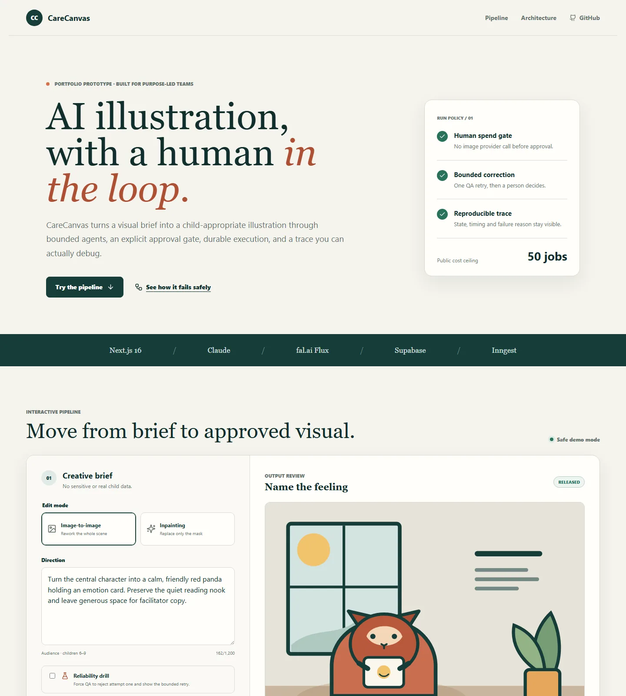

Flagship · live public demo
01 / 02
Human-in-the-loop AI illustration pipeline
CareCanvas
Turns a visual brief into a child-appropriate illustration through bounded AI agents, an explicit human approval gate, and durable execution, with a full trace a reviewer can step through when something goes wrong.
- 19 / 19
- automated tests
- 2
- bounded attempts
- 96
- QA drill score
- 0
- external provider calls

- 01BriefStructured intent
- 02SafetyStop before spend
- 03ApproveHuman gate
- 04GenerateLocal or Flux adapter
- 05Visual QAOne bounded retry
What’s built
The hard boundaries live in code.
Explicit state transitions, Inngest approval waits, Claude and Flux adapters, owner-scoped Supabase RLS, raw-body Ed25519 webhook verification, and auditable traces.
What’s verified
The demo proves the orchestration.
The public demo runs on deterministic local adapters and makes zero external provider calls. The live Anthropic Claude, fal.ai Flux, Inngest, and Supabase paths stay environment-gated.